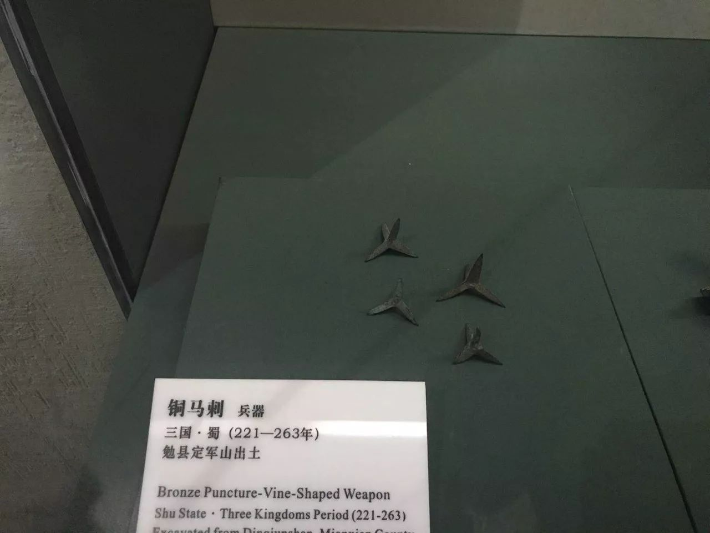
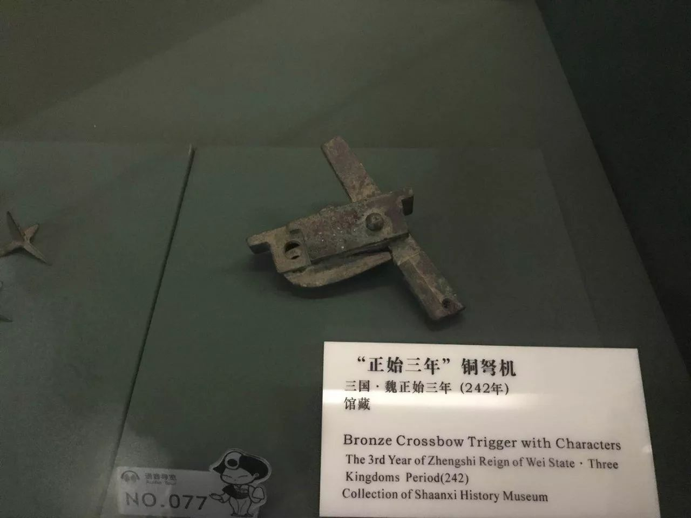
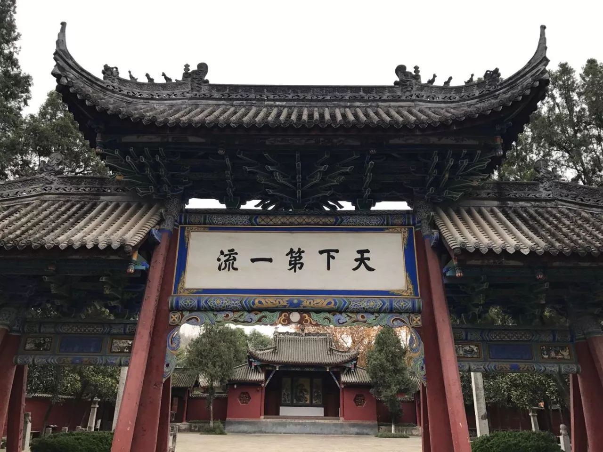
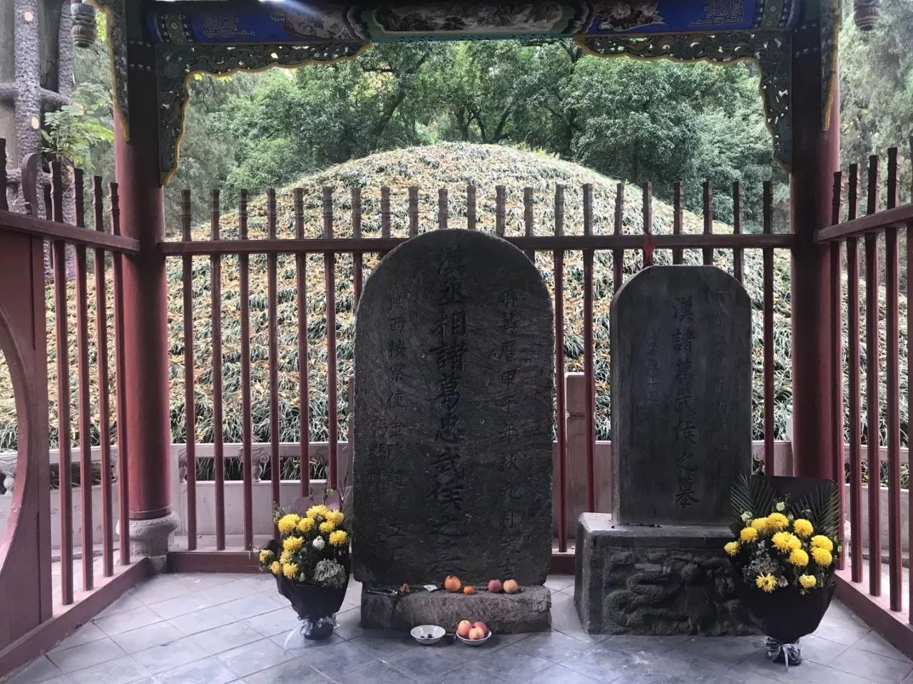
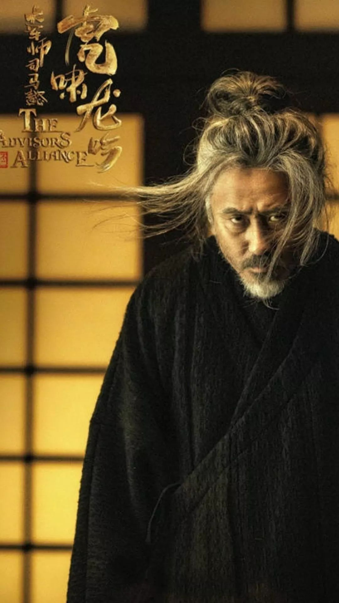
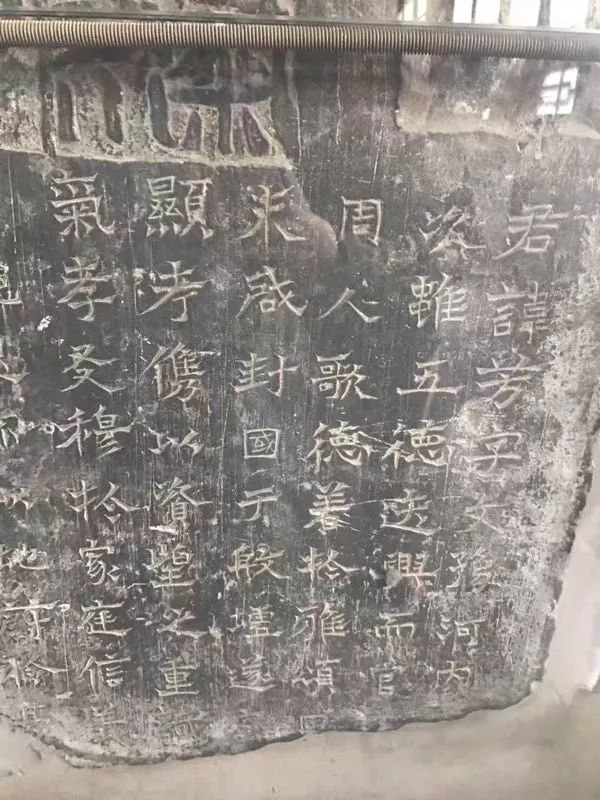
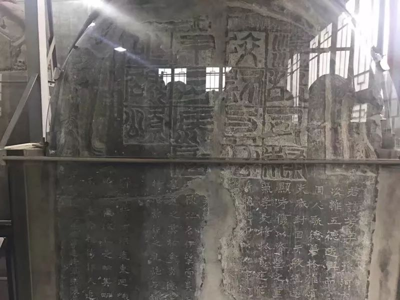

收录于合集 #番外系列 9个
“
下国卧龙空寤主
中原得鹿不由人
”
星陨 ****
在《军师联盟之虎啸龙吟》中，诸葛亮与司马懿的缠斗再次被今人演绎了出来。如果说北伐中原是诸葛武侯一生事业的顶点与终章，都督雍凉就是司马宣王参掌戎机的起点与开端。那些历史在关陇雍凉封存凝固，沧桑了无数扼腕彷徨于季汉国运振扬沉坠的怀古过客，吸引了多少啜饮微酌着魏晋嬗代波诡云谲的古今观者。对那些已经被咀嚼回味了无数次的故事，这里就不在赘述。天清杀气屯关右，夜半妖星照渭滨。撇开旧章不谈，如今不妨直接跳转到公元 234年秋天的五丈原。
诸葛亮知其不可而为之的北伐行动，被历史圣化、拔高，继绝兴微的事业与期许被赋予了与众不同的光芒。这种光芒，是在风雨如晦的困苦逆境中凛然前行所闪耀出的崇高与执着。他生命的最后几年基本都在北伐的前进基地汉中，即便在处理罢黜李严的事件时，也没有回到成都。愈挫愈奋孤注筹谋，即便在身殁后依然选择留葬汉中，诸葛武侯肩负了整个政权兴复汉室，孜孜以求的政治使命，并在身故后犹然高擎着克复中原，还于旧都的大纛。出师表中回顾平生素志的慷慨悲壮，夙夜忧叹躬亲大小事务的兢兢业业，他几乎以一人之力维持了季汉内政的清明团结，这个政权虽然偏霸西南，阻险一隅，却以积极进取的上扬态势举国“贤愚佥忘其身”，毫无割据偏安的萎靡颓废。北伐就是这一政治生态的集中体现。
然而，季汉北伐有着明显的战略软肋。除了民少地蹇外，战略补给的困难也被司马懿洞察。除了在不多的情况下可以因粮于敌外，北伐大军在大部分时候都需要利用艰险的秦蜀古道进行补给运输。而司马懿对付诸葛亮的策略，与罗马统帅费边对抗迦太基名将汉尼拔的战略可谓异曲同工。在第二次布匿战争中，罗马前期在野战中处于下风，费边临危受命改变战略，见汉尼拔远道奔袭补给不济，就避汉尼拔兵锋，尾随其后施压监视。汉尼拔求战不得，在外线作战的消耗与孤军客悬中有粮尽矢绝之虞。但正如孙子兵法所云，善战者无赫赫之功，罗马人对费边的消耗避战策略并不满意，替换费边的瓦罗和保卢斯决意与汉尼拔决战，方有坎尼之败。


早在建兴九年（公元231年）诸葛亮第四次北伐中，司马懿在郭淮被诸葛亮击败后就采取了费边战术，尾随汉军在陇上进行军事游行。一旦诸葛亮寻机交战，魏军不是“敛兵依险”，就是“登山掘营”。只有在诸将以为其胆怯时，司马懿才不得已出战。经过《汉晋春秋》中记载的卤城大败后，他转而继续坚守不战，终于，诸葛亮在粮草耗尽后撤退。
三年后，在公元234年诸葛亮最后一次北伐中，诸葛亮沿褒斜道直出郿县，司马懿依然据险坚壁不战，两军在渭水之滨陷入百余日的僵持。诸葛亮转而在秦陇山地西南环抱，渭水武功东北围绕的狭促空间开始屯田。军事对抗转而成为意志较量。但是，孤忠矢节可以克服秦岭险塞，却终究敌不过天算寿祚。诸葛亮病倒了。


汉中勉县的诸葛亮墓、祠
在这个寒意渐浓的秋天，裴松之注《三国志》援引《晋阳秋》和《汉晋春秋》的表述，分别记下了大星陨落诸葛亮五丈原大营和飞鸟坠江的不祥之兆。二书的作者孙盛习凿齿都娴于蜀中旧闻，川地百姓显然将这些异象焦虑地与丞相的身体和季汉国运联系在一起。两百年前光武中兴时，邓禹大军甫至关中便修葺汉陵，重塑汉官威仪。而如今，汉家陵阙已经在渭水烟云与三辅黄埃中隐没。四十年前，凉州军阀挟持着汉家天子和百官公卿最后一次出现在了秦川父老眼中。而当汉的旌旗再次飘扬在台塬之上时，前代遗老寥寥，已经忘却了诸葛亮肩负的理想。在五丈原的秋风里，仰望天空的武侯或许也曾喟然吁问苍穹，感慨壮志未酬，长叹无力回天。渭水两岸，逝者带着理想远去，生者携着希望离开。司马懿的势力，在军事使命的履行中潜滋暗长。而诸葛亮的外部威胁，恰恰为其个人权势的膨胀提供了外部机遇。
潜龙
一般认为，魏明帝继位后司马懿出镇荆州是其接触军权的开始，但由于荆州地区的吴国军事压力要小于西部战区需要面对的季汉，所以出镇关陇对抗诸葛亮，可谓是司马懿在曹魏军事系统获得关键地位的转捩点。原本在曹丕的顾命中，陈群司马懿作为心腹重臣与曹真曹休作为宗室军人是一组平衡的力量，但由于曹休早死，曹真又在公元231年病故，关陇战区的军事权位出现真空。为了对抗诸葛亮，魏明帝不惜打破旧例，将分陕封疆，专制一方的大任托付给了司马懿。在曹魏的防御体系中，关中、襄阳、寿春作为战略支点地位关键。司马懿政治权势相对稀薄的淮南曾在日后三次起兵反抗司马氏，但西部战区始终稳如磐石，使司马氏从不担心两线作战腹背受敌。曹爽掌权时，试图用夏侯玄、夏侯霸分掌关中军务稀释司马懿政治影响的举措也徒劳无功。
从此，原本掌握在曹氏手上的军权被司马懿介入。在都督雍凉的那些年岁里，诸如郭淮、陈泰等关中诸将和旧部或由其拔擢，或与其共事，庞大的人际关系网成为日后代魏的重要政治资源。除了授予司马懿在关陇独当一面的权力之外，在诸葛亮去世后，魏明帝还毫不犹豫的选择司马懿出征辽东，翦除了一直在魏吴之间首鼠两端的公孙渊。在上述军事行动中，司马懿利用开府辟举之权施恩，将大量人才网罗到自己麾下。明代学者于慎行指出，“东京三公本自无权，徒以辟召之柄，能收士心。”在那个重视门生故吏关系的时代，这种征辟、酬庸的权力赋予了司马懿构建自己权势网络的基础。即便在后来被曹爽架空，他依然可以利用太傅之名延揽士人。

在长长的辟举列表中，既有出身寒微后来在曹魏军事系统中独当一面的邓艾，也有身为名士的阮籍，但更多的，是那些父辈就与司马懿交契的曹魏功臣后裔，例如曾经推荐司马懿的荀彧，其子荀顗被被司马懿辟举，后来成为晋初功臣；而日后底定诸葛诞淮南叛乱，女儿得幸司马炎的胡奋，其父胡遵则是司马懿在关陇战区的下属。司马懿在两汉辟举体系的人设成功从受惠者转换为施恩者。与政治权势冉冉上升的趋势相一致，司马懿的联姻体系也全面铺开成型。魏明帝时期，司马懿安排司马师司马昭分别与泰山羊氏、东海王氏联姻。泰山羊氏祖上（羊续悬鱼的典故）是遭遇汉末党锢之祸的名士，司马师的岳父羊衜曾经先后与孔融、蔡邕之女联姻；而司马懿的岳父王肃，其父则是在如今的B站鬼畜届炙手可热的司徒王朗，王肃本人也是名士大儒。通过联姻跻身汉末以来的第一流名士阶层，使司马氏的联姻圈从相同郡望拓展到全国范围，带来的嫁妆则是更加深厚的人脉关系网。
魏明帝执政的十二年，是曹魏走向内敛化、常规化政治的转型期。尽管魏明帝对司马懿委以重任，但在司马懿参与戎机屡立殊勋的同时，也并没有放松对他的警惕。在《三国志》孙资传中，记载了魏明帝试图将司马懿影响排除军事体系与权力中枢的努力。对于没有儿子，收纳年幼的齐王曹芳为东宫嗣君的魏明帝担忧自己身故后皇权的稳定性问题，故而对顾命大臣的选择反复斟酌。一开始的名单里，已病在垂危的魏明帝明确排除了当时唯一健在的文帝时代辅臣司马懿，拟定了以燕王曹宇为首的皇族班底，同时希望“使亲人广据职势，兵任又重”，恢复曹氏亲贵垄断暴力机器的权位。魏明帝对于幼主驾驭司马懿的政治能量不抱幻想，然而毕竟曹氏贵胄人才凋零，再加上亲信刘放、孙资为了自己专擅权力的私欲不愿曹魏宗室辅政（原拟的辅政大臣夏侯献等人痛恨孙刘），最终还是在辅政大臣的安排中延续了异姓功臣与宗室势力平衡的设计，曹爽和司马懿两驾马车接掌了曹魏的权势。之后的故事是尽人皆知的，司马懿凭借着部分军权和丰富政治经验，经过淡出政治隐忍称病，到垂暮之年于高平陵放手一搏，终于战胜曹爽，奠定了魏晋嬗代的基础。
行藏
囿于旧说，很多人会认为司马氏一门和曹魏官僚阶层在魏晋嬗代的过程中是一个同质化程度很高的阵营。但反对曹爽侵犯异姓功臣既得利益，与支持司马氏攘夺曹魏神器，却不是一回事。在司马懿三代蚕食鲸吞着曹氏基业的侧面，历史却不是单向度的铺陈直叙。作为司马氏家族最长寿的成员，活到晋武帝时代的司马懿之弟司马孚，享受着安平王食邑四万户远高于其他诸王的待遇，终年93岁。在正史的记载中，他的形象是一位心怀曹魏，谦退淡泊的长者。无论是在曹髦被弑时枕尸于股的失声痛哭，还是晋武受禅时对陈留王的依依不舍；抑或是不愿参与侄儿废立魏帝的谋划，以及自命为大魏纯臣的坚持，都让人在那段血腥压抑的魏晋嬗代史中感受到一丝别样的温暖与情怀。
如果今天我们抛开关于司马孚究竟是恪守臣节还是蓄意作秀的争论，单纯从实用角度来说，这种举措未尝不是双面下注：在司马懿孤注一掷豪赌政治生命的同时，司马孚作为忠于公室的纯臣可保司马氏门第不坠。为了维持大家族，多年前，在汉室倾颓的乱世板荡中，司马懿兄弟的父亲司马防也做过类似的选择。他追随汉献帝西去关中，令长子司马朗返乡带宗族避难。


西安碑林藏司马懿之父司马芳残碑
（关于是防还是芳，今天尚有争议，但一般认为是同一人）
从稍具情怀的角度而言，很可能司马孚也是一位痛苦纠结的士人，置身于一个动荡的时代，为曹魏的奠基发展奋斗了半个世纪，却要在晚年面临君臣大义与家族利益的撕裂煎熬。被裹挟在国家与家族的漩涡中，司马孚尽管仍将忠诚寄托于曹魏，但也并没有在司马氏一次次惊心动魄的军事政治行动中独善其身。丰富的央地从政经验，雅望最似司马懿，司马孚在高平陵政变中义无反顾地加入进来，在控制首都洛阳的重要军事行动中，司马孚和司马师参与了最为关键的军事行动-—-司马门围攻战。司马门是内廷门禁，也是禁军保卫王宫的卫戍重地，后来晋惠帝时贾后诛杨骏之变，楚王玮屯于司马门；八王之乱中，成都王颖也将守卫宫禁的主力驻扎在此。司马门在魏晋历史中的地位，就像玄武门在唐代多次政变中一样，可谓争夺首要。
在司马懿去世后，作为司马氏家中最具威望的长者，司马孚也没有缺席历次军事行动。司马师执政时为了拓边以求合法性，贸然发动伐吴战役，却在东关大败于诸葛恪。这时是司马孚领军在新城击败诸葛恪，化解了司马氏的政治危机（公元252-253）；正元元年（公元254年），当关中在姜维出击陇右的兵锋下岌岌可危时，司马孚就像救火队员一样前往坐镇长安；尽管他不愿参与禅让，但晋武帝还是将都督内外军事的最重要职务太宰委任于他。但在他辞世时的遗令中，坚持以“魏贞士”自称，却意味深长的留下了“不夷不惠”的自我定论。伯夷不食周粟，而柳下惠则坚持不愿与奸佞同流合污。“不夷不惠”源自孟子对伯夷柳下惠的批评，在汉代士人中被广为尊奉。也许在斗争与妥协后，司马孚更欣赏这种圆融折衷的态度，而不是一味固守先贤清教徒般狂热激进的处世心态。司马孚青年时也受到过汉末激浊扬清的士风砥砺，见证过士人慨然大义的高蹈气节，目睹过大儒奋不顾身的清议坚守，但时代也在变化，伦理道德使他在两难困境中挣扎一生，只能以先贤遗教来自我安慰。
纷纷扰扰的王朝鼎革后，由贾充、荀勖、王沈、裴秀、羊祜五人班子开始辅佐晋武帝，但五人无一例外，都是司马氏最亲密的姻亲和故交，门第已经固化僵硬，最高决策层已经没有了来自寒微的有生力量。暮气沉沉的西晋在高门大族的翼赞下登场，内部斗争的阴影却萦绕不散。半个多世纪后，神州陆沉，遍地腥膻。偏安建康的晋明帝有一天问温峤晋朝得天下的过程。一旁的王导作为人生经验丰富的长者，主动告诉年轻的皇帝，温峤太年轻，还是由他回答吧。接下来，他丝毫不顾忌政治正确，将司马懿父子政变夺权，杀人如麻的“光辉历史”耿直而耐心讲给了不谙世事的明帝司马绍。司马绍惭愧地把头埋下，说道：“若如公言，大晋基业岂能长久。”而在北方，出身蛮族的后赵皇帝石勒则毫不掩饰的表达了对司马懿“欺人孤儿寡妇，狐媚以取天下”的鄙夷。颇有自知之明的晋明帝去世很早，而他的女婿桓温在半个世纪后威福自操，独擅权柄，废立皇帝。经过田余庆先生考证，桓温的祖上，就是在高平陵政变中被司马懿诛杀的大司农桓范。多少兴废事，尽入渔樵闲话。
政观编辑部